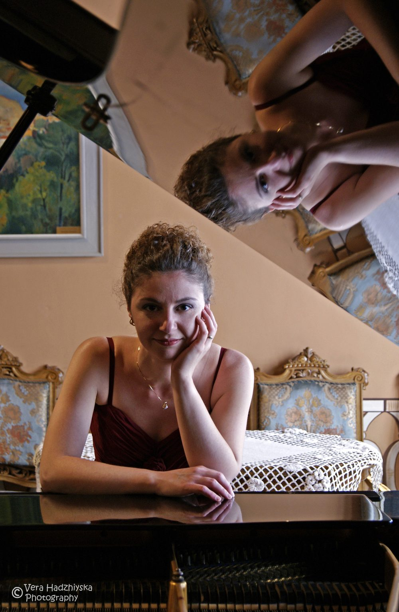

Dr. Denitsa VanPelt holds degrees in piano performance from the University of Cincinnati College-Conservatory of Music (DMA and BM summa cum laude) and Bowling Green State University (MM). She received her Suzuki certification under the guidance of the renowned teacher trainer Mary Craig Powell.
Dr. VanPelt started piano studies at the age of five, enrolled in the Dobrin Petkov School of Music in Plovdiv, Bulgaria at the age of six, and made her solo recital debut at the age of eight. In 2001 she was the first high school recipient of a National Diploma for Academic Excellence and Artistic Achievement from the Bulgarian Ministry of Education. Dr. VanPelt moved the United States in 2001 to pursue her piano studies as the recipient of a full-tuition scholarship at the University of Cincinnati College-Conservatory of Music.
As a performer, Dr. VanPelt has won numerous piano competitions and has played hundreds of solo and chamber music concerts. She has collaborated with outstanding musicians, including James Bunte, professor of saxophone and head of the Performance Studies Division at the University of Cincinnati, Dr. Jeremy Long, associate professor of saxophone at Miami University, Timothy McAllister, professor of saxophone at the University of Michigan, and Jörgen van Rijen, principal trombonist with the Royal Concertgebouw Orchestra.
Dr. VanPelt has more than twenty years of experience teaching students of all ages. She teaches Suzuki and traditional lessons from her home studio in Princeton, NJ. Her students regularly receive the highest recognition in achievement programs and competitions. Dr. VanPelt received the Steinway Top Teacher Award in 2021, 2022 and 2023.